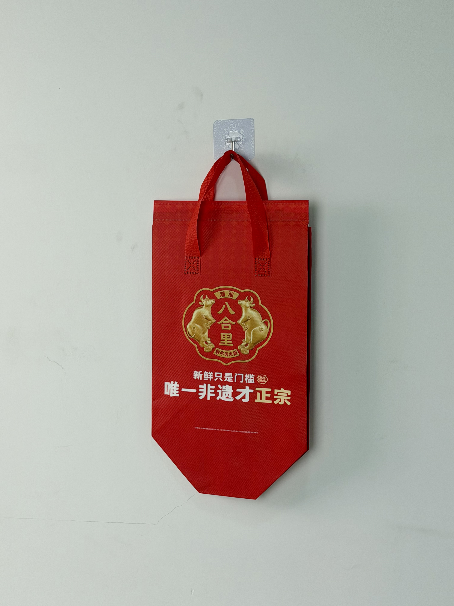

A ceremonial red insulated tote designed for BaHeLi, a heritage Chaoshan beef hotpot brand, featuring gold-foil heritage branding and a geometric base that honors culinary tradition while solving modern delivery logistics.

BaHeLi is a celebrated Chaoshan-style fresh beef hotpot restaurant chain with over 200 locations across China. Originating from the Chaoshan region of Guangdong — renowned for its beef-processing heritage — the brand holds official intangible cultural heritage status for its traditional beef preparation techniques. Unlike standard hotpot concepts that use frozen meat, BaHeLi's entire brand promise rests on serving freshly slaughtered beef within hours of processing, hand-sliced to order by trained craftsmen.
Our customers don't just order hotpot — they order a piece of Chaoshan heritage. The packaging must feel as special as the meal inside.
As BaHeLi expanded into home-delivery and premium gift-box services, the brand faced a packaging paradox: how to communicate centuries-old culinary tradition through a modern disposable carrier. The solution drew directly from Chinese ceremonial aesthetics — red and gold as symbols of prosperity, paired with heritage iconography that honored the brand's cultural roots.
The design language merges Chinese cultural symbolism with contemporary packaging functionality. The deep red field references traditional gift packaging and festival aesthetics, while the circular gold seal featuring twin bulls directly illustrates the brand's Chaoshan heritage. The result is a bag that functions as both delivery equipment and a ceremonial gift container.
Color combination rooted in Chinese gift-giving tradition, elevating delivery into a cultural experience.
Gold-foil emblem featuring paired cattle in traditional Chinese decorative style, communicating provenance.
"新鲜只是门槛 唯一非遗才正宗" positions freshness as baseline and intangible heritage as true differentiator.
Angled bottom panels create stable footing for heavy hotpot ingredient sets during courier transport.
Fresh beef hotpot delivery presents unique thermal challenges. Raw meat, broth, and fresh vegetables must maintain safe temperatures during transport while the packaging itself needs to communicate premium quality. The BaHeLi tote was engineered for 4-hour cold-chain retention — the maximum window from kitchen preparation to home cooking.
| Parameter | Specification | Test Standard |
|---|---|---|
| Cold Retention | < 8°C for 4 hours (25°C ambient) | Internal Protocol |
| Load Capacity | 6 kg | ASTM D5265 |
| Leak Resistance | Grade 4 (spray test) | AATCC 22 |
| Foil Adhesion | > 300 cycles | ASTM D5264 |
Heritage-brand packaging requires production precision worthy of the brand story. The six-stage workflow incorporated specialized foil-stamping and cold-chain lamination processes to ensure every bag delivered the promised quality.
100gsm non-woven PP extruded with red masterbatch. Delta E controlled within 1.2 for ceremonial color consistency.
Heritage seal and typography hot-stamped at 155°C with engraved copper die. Multi-stage registration for complex emblem.
20-micron matte BOPP film laminated for premium hand-feel. Matte finish enhances gold foil contrast versus gloss.
4mm EPE foam bonded to aluminum-PE barrier. Heat-compression at 3.5kg/cm for permanent cold-chain sandwich.
Geometric bottom panels cut with ultrasonic sealing. Pre-scored angles ensure consistent assembly and stable footing.
Double-needle stitching at 8 SPI. 100% foil adhesion inspection. Thermal probe sampling validates 4-hour cold retention.
The thermal tote was deployed across BaHeLi's home-delivery service and premium gift-set program during the Lunar New Year season — China's peak period for hotpot gatherings and gift-giving. The bag's ceremonial aesthetic made it particularly suitable for the festive occasion.
Key Insight: Social-media analysis during the Lunar New Year period showed that BaHeLi gift sets were among the most photographed food deliveries, with the red-and-gold bag frequently appearing as the central visual element. Customers explicitly mentioned the packaging as a reason for choosing BaHeLi over competitors for gift occasions.
The bag's cultural resonance extended beyond immediate customers. Elderly recipients of BaHeLi gift sets — typically less engaged with modern delivery culture — specifically praised the "proper" packaging as befitting a heritage brand. The design successfully bridged generational expectations around food presentation.
Three design decisions differentiate this heritage-brand bag from standard hotpot delivery packaging. Each draws from cultural semiotics and behavioral psychology specific to Chinese food culture.
Red and gold in Chinese culture carry specific associations with prosperity, celebration, and respect. By deploying these colors in delivery packaging rather than standard corporate branding, BaHeLi positions every delivery as a ceremonial event — particularly effective during festivals and family gatherings.
The circular gold seal format mimics official Chinese cultural-heritage plaques and certificates. This visual reference transfers institutional authority to a commercial product, reassuring customers that the beef inside meets authentic Chaoshan standards.
Fresh Chaoshan beef begins degrading in texture and flavor within hours of slaughter. The 4-hour cold retention specification ensures that meat sliced at 10:00 AM still meets BaHeLi's quality standards when delivered at 2:00 PM — a non-negotiable requirement for heritage-status product integrity.
We design ceremonial packaging for heritage restaurants, cultural brands, and premium food concepts. From gold-foil heritage seals to cold-chain engineering, we honor tradition while solving modern logistics.